| 日付 | 2018年3月25日（日） |
|---|---|
| メンバー | 家族（妻） |
| アクセス | 電車 |
会社で横浜クルージングのペアチケットが当たったので行ってみる。
ちょうど子供たちが2泊3日で妻の祖父母の家に遊びに行っているため都合が良い。
子供が産まれてから、夫婦で出かけるのはほぼ初めてだ。
少し早めに横浜に行って、中華街で昼食をとることにする。
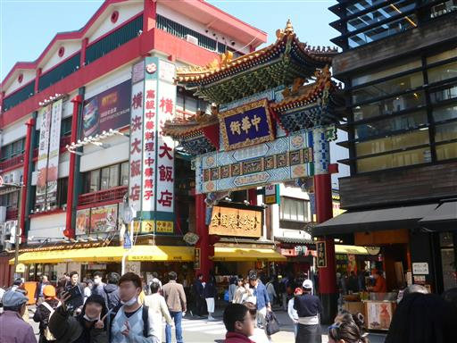
中華街は相変わらず人通りが多くて賑わっている。
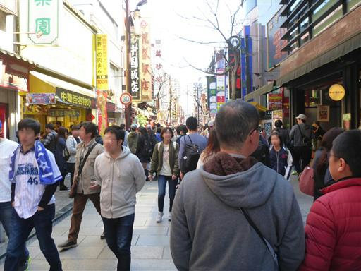
昼食は萬珍樓點心舗でとる。この辺りは人影が少ないが中はそこそこ賑わっている。
ここは点心料理の名店だ。
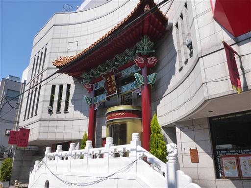
昼食後は側にある山下公園に行く。ここも賑わっている。
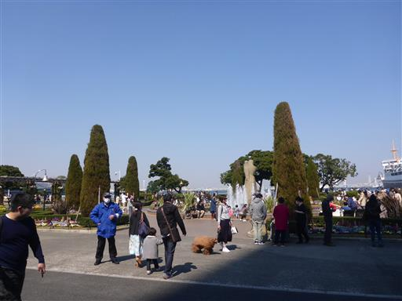
見事な枝垂桜。今年は桜の開花が早く、満開に近い状態だ。
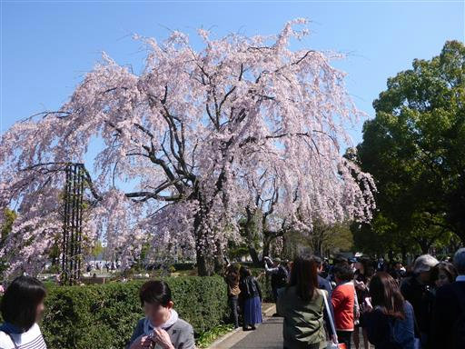
桜の木は多くないが、ところどころに咲いている桜が青空に映える。
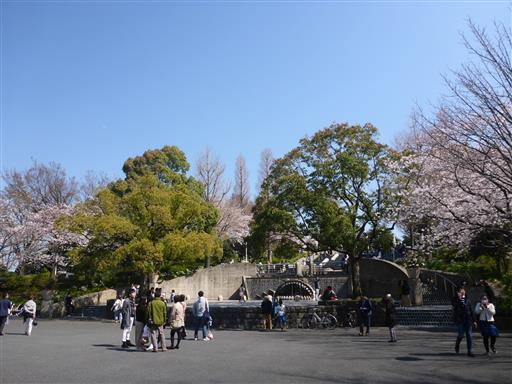
何かの口の形をしている。
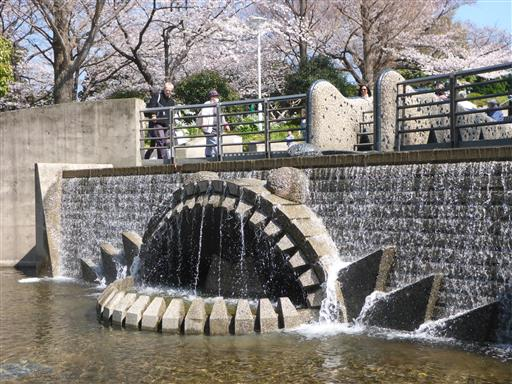
その後ろに続く体の部分。蛇だろうか？
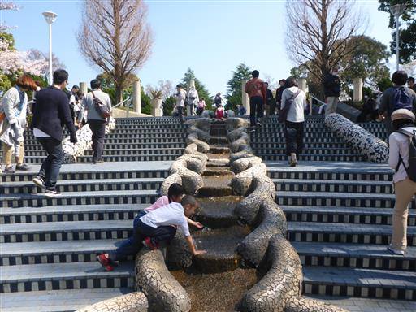
お花畑は色とりどりで非常にカラフルだ。
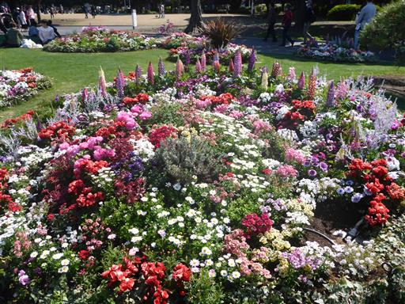
横浜港までやって来る。

氷川丸。1930～1960年まで運行されていた貨客船で、重要文化財に指定されている。
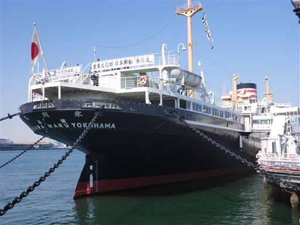
係留するための鎖のなぜか一本にだけ鳥がたくさんとまっている。
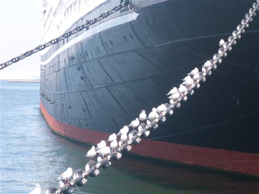
遠くに横浜ベイブリッジが見える。
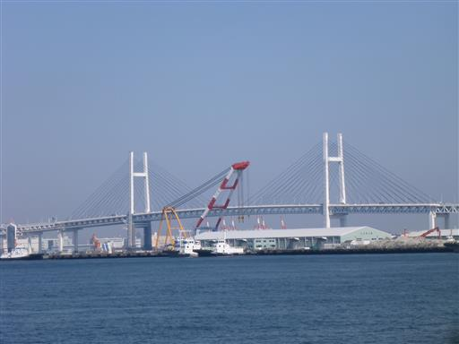
出航時間が近づいてきたので、大さん橋に向かう。
この辺りから見る横浜の街並みの風景は非常に美しい。横浜を代表する景観だ。
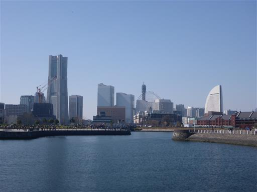
大さん橋に到着。ちょうど客船が出航しようとしているところで、無数の紙テープが見える。
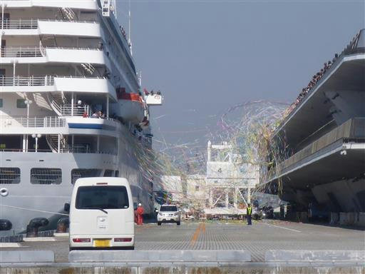
展望デッキに行ってみる。見送りの人の数が半端ない。
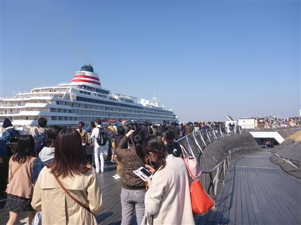
船の名は「飛鳥II」。日本最大の超豪華客船だ。
これからどこに向かうのだろうか？
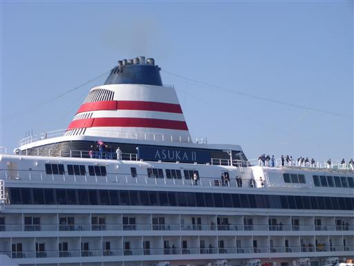
見送りを終えたらロビーで乗船手続きを行う。
国際客船ターミナルだからか全体的に凝った造りになっていて、まるで空港のようだ。
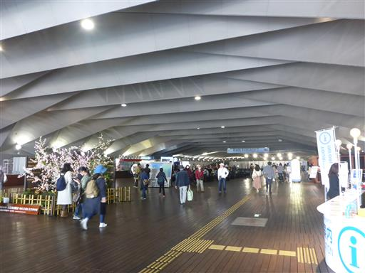
今回乗る船「ロイヤルウイング」。そこそこ大きな船だ。
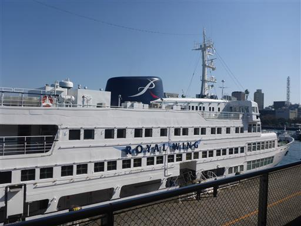
港は流線型の美しい造りだが、階段が無いため乗船までに結構長い距離を歩かされる。
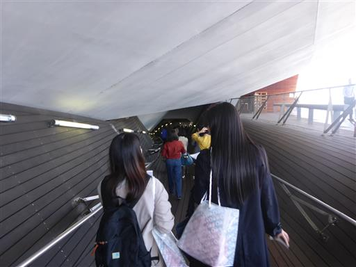
船内の様子。この船はレストラン船で席に案内される。
今回はティークルーズのため、飲み物とお菓子が出てくる。
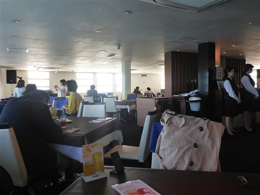
横浜ベイブリッジの下を通る。
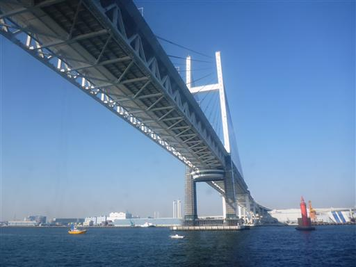
お茶の後はデッキに出てみる。
今日は暖かい日なので、海上でもあまり寒く無くて助かる。
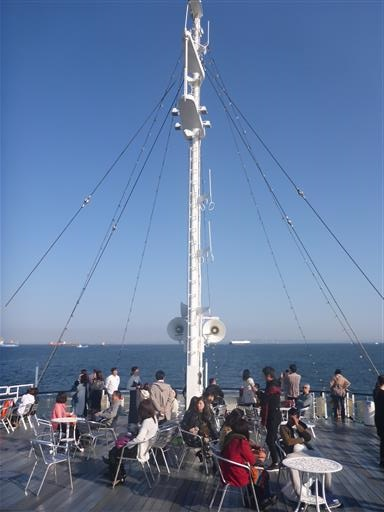
たくさんの船が並んでいるが、動いている気配がない。
出口が狭い東京湾を出るための順番待ちなのだろうか？
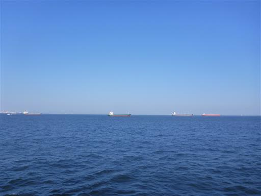
コンテナクレーンがたくさん並んでいる。
周囲は工場やクレーン、仕事の船が多い。
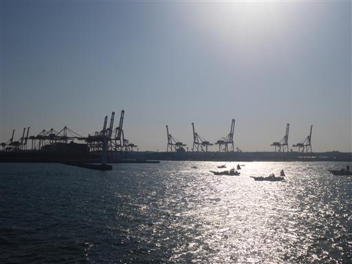
鳥が飛んでくる。カモメだろうか？
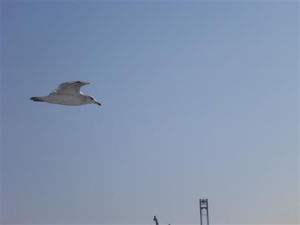
1時間半のクルーズを終え、港を後にする。
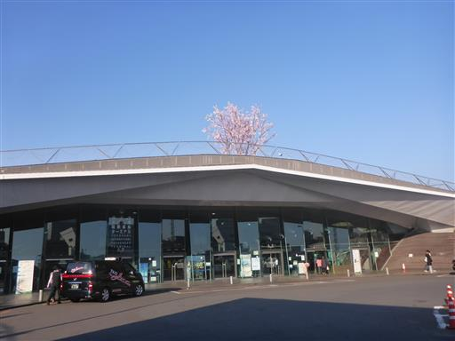
駅に向かう途中に横浜スタジアムの側を通る。
ちょうど試合が終わった後なのか、ものすごい人出だ。
最後は人ごみにもまれながら帰宅する。
久々に子供たちのいない休日をゆっくりと過ごせた。